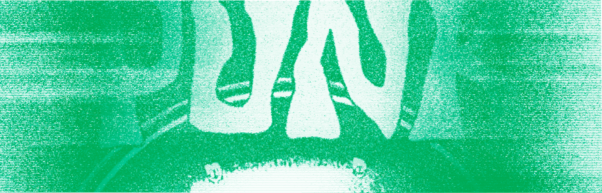

Учебник • Введение в зины • История зинов
Введение в зины
2.2 История зинов

2 минуты на изучение
Краткая история зинов от фанатских историй, панк-движений и самиздата до современных изданий
Эстетика зинов
1930–2025
1930-е
Появление фэнзинов. В СССР аналогом зинов стал самиздат — подпольные издания, через которые люди делились запрещёнными произведениями, идеями и мнениями, избегая цензуры. Самиздат стал символом свободы мысли и борьбы с пропагандой.
1960-e
Самиздат в СССР. СССР аналогом зинов стал самиздат — подпольные издания, через которые люди делились запрещёнными произведениями, идеями и мнениями, избегая цензуры. Самиздат стал символом свободы мысли и борьбы с пропагандой.
1970-е
Панк-зины и DIY-культура. В эпоху панк-движения зины стали способом протеста против системы и массовой культуры. Такие зины как Sniffin’ Glue открыто выражали идеи независимости и стали голосом целого поколения. Они вдохновили людей создавать свои медиа.
1990-е
Расширение тематик. Феминистские движения привлекли к зинам внимание новых сообществ. Ярким примером стали Riot Grrrl — зины, которые продвигали идеи феминизма и личного самовыражения, обсуждали женские проблемы и объединяли активисток.
2000-е
Цифровизация. С развитием цифровых технологий зины приобрели новые формы. Появились онлайн-зины и социальные медиа, которые помогают легко делиться своими идеями с широкой аудиторией, сохраняя дух самовыражения.